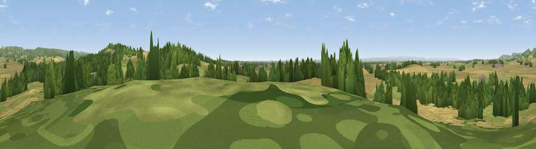

Viewpoint near Husthwaite
#25099 in England · top 64% of its area beats it · near HusthwaiteThe view, rendered

A 360° render of this exact spot computed from the terrain model, tree cover and land cover — summer colours, afternoon light, calibrated against photographs of famous viewpoints. Real trees, hedges and buildings will differ in detail.
The panorama
Grey silhouette: terrain skyline in each direction (720 bearings, Earth curvature and refraction included). Dashed green: skyline with trees (+15 m) and buildings (+8 m) as obstacles. Blue strip: how far the ground is visible on each bearing.
Where the view opens
Wedge length = distance to the farthest visible ground on that bearing (vegetation-aware). Rings at 10, 25 and 50 km.
What fills the view
41% grassland · 38% cropland · 19% woodland · 1% built-up
Angular shares of the visible panorama (visual magnitude), not map area. Landscape diversity 0.48 (0–1 Shannon).
Key numbers
More beautiful places nearby
The staircase of upgrades: each row has a higher view potential than everything closer. Driving times are estimates from straight-line distance, calibrated against real road routing — check an actual route before setting out.
| Place | Direction | Drive | Score |
|---|---|---|---|
| Viewpoint near Husthwaite | ESE · 2 km | ~5 min | 60.7 |
| Viewpoint near Husthwaite | ENE · 2 km | ~5 min | 69.8 |
| Snape Hill | N · 4 km | ~9 min | 71.8 |
| Viewpoint near Wass | NE · 6 km | ~13 min | 72.6 |
| Hood Hill | N · 7 km | ~14 min | 79.6 |
| Viewpoint near Thirlby | N · 9 km | ~17 min | 81.5 |
| Beacon Hill | N · 26 km | ~41 min | 84.7 |
| Carlton Bank | N · 28 km | ~44 min | 85.1 |
54.16535, -1.22076 · source: screening · position refined by local search. Computed location — check access rights before visiting.